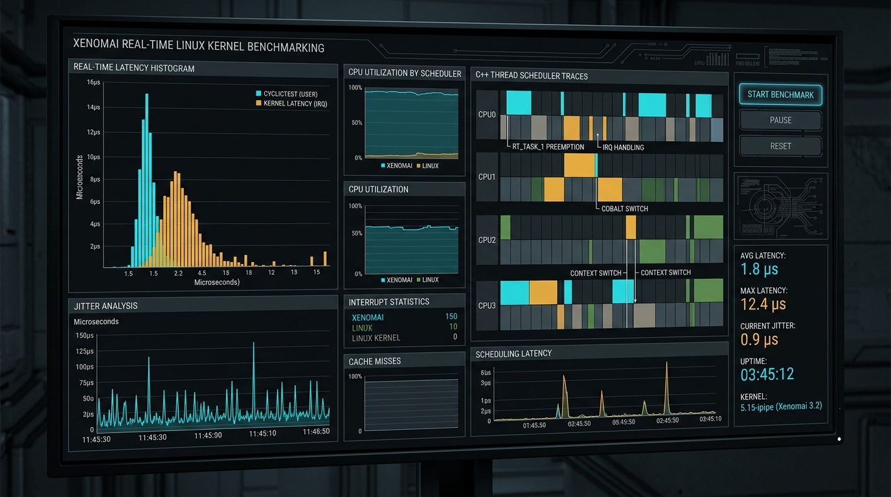

Real-Time Linux / Xenomai
Open Source
Xenomai RTOS 1ms Thread Sleep & Latency Benchmarking
Deterministic C/C++ microsecond latency profiling suite on Xenomai RTOS (Alchemy API). Executes periodic 1ms thread sleep cycles (rt_task_sleep_until) with 250µs busy-wait spinning, evaluating CPU isolation and stress loads (25%–90%) via Python telemetry scripts.
C/C++Xenomai RTOSPOSIX ThreadsPREEMPT_RTPython (Pandas)